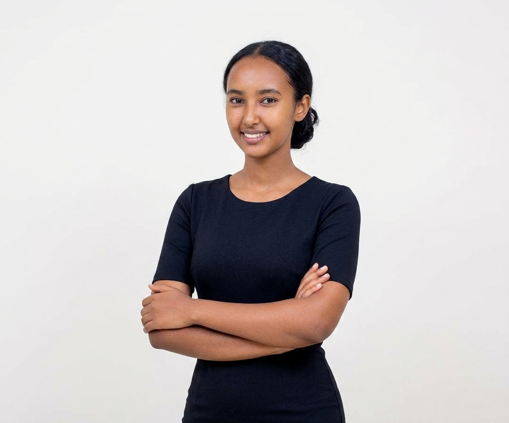

Spiritual Foundations
I am a christian guy ena My faith gives me inner strength and peace during stressful times.
Social Life & Connections
I value real relationships built on mutual respect, encouragement, and honest communication whether with family, close friends, or campus peers.

My Feelings & Respect for Yanet
Yan, ever since I first saw you, you held a special place in my mind. When I first noticed you, I felt a genuine spark and admiration that stayed with me for a long time.
I was quiet and reserved at first, and while time passed, my respect for you never faded. Over time, that early admiration grew into a deep appreciation for your grace and character. This page simply holds that respect with complete sincerity and zero pressure.
Where It All Began — The First Memory
Some moments stick with you effortlessly, and seeing you for the first time was one of them. It wasn't planned or exaggerated—you were simply moving through your day, but there was a quiet grace and presence about you that instantly caught my attention.
I kept my distance and stayed reserved at the time, but that single moment left an impression that stayed in the back of my mind long after. It was the spark that eventually grew into the genuine respect and appreciation I hold for you today.
Qualities I Respect & Admire
Beyond that initial impression, getting to observe your character over time made me appreciate who you are even more. There are a few specific qualities that really stood out to me:
- ✨ Quiet Grace & Presence: You carry yourself with a natural, unforced calm that effortlessly brings light into any environment.
- ✨ Genuine Kindness: The way you interact with others reflects real warmth, sincerity, and humility.
- ✨ Inner Strength & Focus: You move through life with purpose and dedication, which is something I deeply admire and relate to.
- ✨ Unassuming Elegance: You stand out not by trying to seek attention, but simply by being authentically yourself.
It’s these subtle traits that converted early curiosity into genuine, lasting respect.

First Impression & Invitation
The memory of seeing you for the first time remains fresh in my mind. You stood out effortlessly, leaving an impression that stuck with me ever since.
I created this section to clear away any old silence or awkwardness. If you are ever open to it and feel comfortable, I would be happy to meet up in person—just to sit down, grab a drink, and catch up directly.
A Sorry
Yanu, I want to speak to you directly and apologize for my past mistakes. Looking back, trying to approach you through someone else was completely the wrong way to go about it. You deserve direct, genuine, and respectful communication. Indirect routes don't match your character or grace, and taking that path was entirely my fault.
I also want to be honest about why I hesitated: whenever I saw you in person, I was simply too shy and nervous to step up and even say a simple "hi." Instead of being straightforward, I let my self-consciousness get in the way.
I take full responsibility for how awkward that made things feel. I deeply respect your boundaries, and my only wish here is to clear the air with total honesty and zero expectations.
Leave a Thought or Reply 💬
Yan, if you ever feel like leaving a note or replying, you can type your message right here:
📸 A Small Request
If you're open to it, feel free to drop your phone number below so we can stay in touch easily.
My Academic Story & Medical Moments
Medicine wasn't just a career path I chose; it became a journey that shaped how I view life, discipline, and human connection. Studying at Dire Dawa University has been both one of the most challenging and defining chapters of my life.
📚 The Academic Grind & Study Habits
From mastering complex anatomy to diving deep into pathology and hematology, my daily routine revolves around continuous learning. I’ve always preferred visual, conceptual understanding—breaking down intricate physiological mechanisms late into the night until every detail clicks into place. It takes intense focus, but the pursuit of real knowledge makes the long hours worth it.
🏥 Hospital Rotations & Unforgettable Moments
Stepping out of the lecture halls and into the hospital wards changed everything. Being on rotation puts you face-to-face with real human vulnerability. There are moments in those corridors I will never forget—standing beside patients during their quietest struggles, witnessing the resilience of families, and learning what it truly means to care for someone with empathy and calm under pressure.
Looking Ahead: Every exam, rotation, and late-night study session is a step toward building a meaningful career in healthcare—driven by purpose, growth, and dedicated service.
Unforgettable Moments & Friendships
Beyond the academic grind and hospital rotations, the real heart of these university years comes down to the people walking alongside me. The friendships built here aren't just casual connections—they are genuine bonds forged through shared struggles, late-night study sessions, and endless conversations.
☕ Shared Coffee, Laughter & Late-Night Talks
Some of my favorite memories aren't big milestones, but the quiet moments in between—grabbing coffee between intense lectures, decompressing after hard exam weeks, or talking about life, dreams, and purpose late into the evening. Having friends who support your goals and bring light into stressful routines makes every challenge feel manageable.
🤝 Loyalty & Standing Together
Medical school teaches you quickly that you can't survive this journey alone. Collaborating on projects, lifting each other up during moments of fatigue, and celebrating small victories together has shown me the true value of loyalty, teamwork, and genuine brotherhood.
These shared stories and memories are a massive part of who I am today—reminders that no matter how demanding life gets, good friends make the journey meaningful.
Family Roots & Lessons from My Mother
As the firstborn in my family, my role has always come with a natural sense of duty. Being the oldest brother to my 3 sisters and 1 brother means my actions matter—not just for myself, but for them. I strive to set a strong example of hard work, discipline, and respect so my siblings know they can always rely on me and be inspired to pursue their own dreams.
My mother’s advice forms the core foundation of my life principles. She always taught me that true dignity comes from quiet integrity, honesty, and treating every single person with fundamental respect. She taught me to stay humble when things go well, to stay patient during hardships, and never to compromise my values for short-term gains.
Whenever university life gets overwhelming or the road ahead feels tough, I think back to my mother’s words and the sacrifices my family made for me. That grounding keeps me motivated to keep pushing forward without making excuses.
Future Vision & Long-Term Dreams
My long-term vision for life is centered on achieving stability, personal fulfillment, and peace. My immediate priority is to finish my university studies strong, transition smoothly into clinical practice, and build a career that brings both professional pride and financial security.
I want to earn a position where I can take full care of my parents and family, giving back to them for everything they invested in me. Achieving financial independence will allow me to support my siblings as they grow and pave their own paths.
Further down the line, I dream of establishing a peaceful, warm, and faith-centered home. I value creating an environment built on mutual respect, strong values, and genuine love—a place where life's milestones can be celebrated together with family and true friends.
Every decision I make today—every late-night study session, every clinical rotation, and every moment of self-reflection—is a step toward turning this vision into a reality.